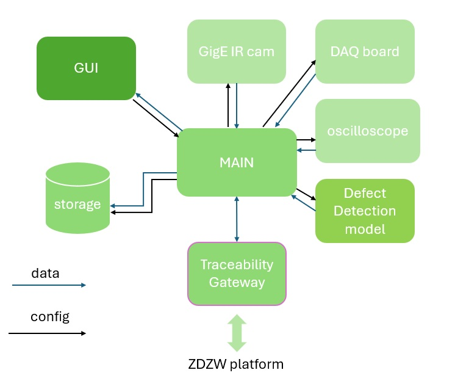

Welding Process Inspector
General Description
This solution is designed to predict and estimate the presence of defects during the welding process by monitoring process parameters in real time. The objective is to reduce production time and minimize waste caused by defective welds.
Deployment occurs in two stages. First, several sensors are selected and integrated into the welding torch to comprehensively monitor the welding process. These sensors track various process parameters, such as welding speed, wire feed rate, welding electrical signals, and thermal information of the weld bead and base plate. The system synchronizes this data both temporally and spatially, creating comprehensive and valuable datasets.
In the second stage, the collected data is analyzed and correlated with Non-Destructive Testing (NDT) data to develop models capable of alerting of high probabilities of defect occurrence in real time. These models are deployed using an edge computing paradigm, meaning they operate close to the monitoring system.
This solution requires specific hardware. The data acquisition software and the defect detection model are embedded within this hardware. Users will have access to two interfaces: one for configuring and controlling the hardware, and another for offline, detailed visualization of the recorded data.
Top Ten Functionalities
-
Welding process monitoring system: Main feature of the Welding Process Inspector. It provides the technical means (HW & SW) to monitorize all relevant parameters of a welding processassutring a good synchroniztion.
-
Enables implementation of AI-based quality assurance algorithms: Both the HW and the SW are designed to implement quality control algorithms, feeding them with real-time processs data.
-
Early detection of defects: Time and scrap reduction in rework tasks. The monitoring system can be used to acquire welding data. These data is susceptible to be used to elaborate a data model of the welding process that should be able to detect when the welding process is out of the optimal parameters window and, therefore, return the probability of defects appearing in time real.
-
Flexibility: The monitoring system covers a great variety of sensors and communication protocols (e.g., TCP/IP or Profibus).
-
Scalability: The system eases to add new sensors. The monitoring HW and SW can be updated and cofnigured to handle a great number of sensors.
-
Adaptability: The monitoring system is adaptable to any metallic welding process. The sensors and protocols used to monitoring the welding process can be selected for each specific case (i.e. d+different welding proccesses, diferent weldign stations...)
-
Contribution to the digitalization of the industry: Process variables are digitally acquired and stored. The monitored data can be seen as the digital twin of the welding process, enabling a digital traceability of each welded bead.
-
Possibility to set alarms when out of quality limits: The Welding Process Inpector provides the data processing and the interface required to implement alarms when abnormal process behaviours are being produced.
-
Enables process control: The Welding Process Inpector furnishes further data to understand reality of the welding process and provides the interfaces with the process to test/implement closed-loop control strategies.
-
Thermal info from welding bead and base plates: The system can record images from IR cameras using GeniCam standard. Also, punctual pyrometers contribute to gather thermal information.
Architecture Diagram

- Internal modules:
- Main: Synchronizes data acquisition from the different internal modules (sensors, data storage and defect detection algorithms).
- GigE IR cam: This module enables connection to cameras following GigE/genie cam protocols/standards.
- DAQ board: Data Acquisition Board. Acquire digital and analogue signals, e.g., pyrometers.
- Oscilloscope: Aaquires analogue signals at a high sampling frequency, i.e., voltage and current of each welding torches.
- Laser line: retrieves the geometrical data scanned by the laser line profilometer.
- Pose Logger: Retrieves the position of the welding torches regarding the whole part.
- Defect Detection Algorithm: Analises data stream from sensors and warns when anomalies are identified.
- Storage: Data is saved locally in a custom data format.
- GUI: Graphical User Interface. Allows the user to configure the monitoring system and to check the correct operation of the system during welding.
- API: SW interface to the monitoring system
Image Overview
The present section addresses the user interfaces envisioned to interact with the Welding Process Monitoring solution. Two GUIs are defined, one for configuring all devices involved in the data acquisition which also provides some features for online visualization and another one for offline analysis of the recorded data.
Above figure is a design for the GUI in charge of the HW configuration of ZDZW Welding Inspector the and a subsampled online visualization of the welding process (a.k.a. recorder app). On the left side you can see the 3 different formats for the visualization of the data that is being recorded, while the right side is reserved for the configuration of the system and to start/stop the recording. The online visualization includes an image viewer for the IR camera and graph and scalar viewers which allow the user to plot desired parameters. The “configuring input/output interfaces” contains the settings of the sensors that are being used for monitoring the welding process. The “Recorded params” section links the process parameters with the sensor that is being used to get their values. The “metadata” section contains relevant logistic information. The GUI allows the user to enable/disable a defect detection model and to load different models. Finally, the GUI offers a couple of buttons to start and stop the recording manually.
Above figure shows the mockup of the GUI for the offline visualization (a.k.a. visualizer app). While the recorder app offers a restricted, but online, visualization of the monitored data from the welding process, the visualizer app allows skilled personnel to analise the recorded data aand visualize it in different formats. The recorder app allows the operator to detect disturbances on the welding process or possible mistakes in the configuration of the monitored system, while the visualizer app allows a deeper analysis of the recorded data. In addition to the image and graph viewers already available in the recorder app, the visualizer app also provides a 3D representation of the process parameters.
Hardware Components
The Welding Process Inspector relies on a combination of some specific HW and custom SW. The HW is divided into a CPU, some middle HW for signal processing and the sensors.
A small factor CPU is chosen for the sake of space economy, but guaranteeing minimum requirements to handle the data acquisition SW and capability to deploy data models based on Deep Learning techniques.
To capture the detailed waveform of welding currents and voltages we opted for a PicoScope USB oscilloscope. When selecting this device, it is vital to ensure the proper number of channels to cover all welding current and voltage signals and a propper bandwidth to guarantee a right sample rate. These parameters may vary depending on the specific welding technique or welding procedure being monitored.
The welding voltage must be pre-processed at the input of the oscilloscope to adapt the voltage amplitude and to isolate the signal to avoid any electromagnetic interference. To that purpose, a differential voltage probe must be selected for each welding voltage signal. The input range must cover the welding voltage range and the differential output range must fit in the oscilloscope input range.
A DAQ (digital acquisition board) processes analog and digital signals to be read by a CPU. In our app we use a labjack T7 which handle fairly high resolution analog I/O and digital I/O. This particular device has some useful funtionalities as frequency inputs, high speed counters or support to protocols like SPI or I2C among others. The great variety of options of this DAQ contributes to several functionalities of the solution, like the flexibility, adaptability, scalability or the ability to set alarms to stop the welding process when it's out of quality limits, for example.

CPU and intermediate signal processing HW is enclosed in a cabinet alongside other components as power sources or wifi/4G router. The cabinet can be easily installed next to or onto the welding station. Different connectors provide HW interfaces to connect the sensors allocated in the different areas of the welding station by convenient wire hoses.

The sensors must be placed on the welding torch, welding power wire hose and positioning system to acquire the relevant information. Above picture show some typical sensors placed in a Sumerged Arc Welding torch: encoders for wire feed rate (green), pyrometers (red), laser-line profilometer (yellow) and GigE camera (blue).
Computation Requirements
Below we detail the computation requirements for the user interfaces depicted in Image Overview section.
| minimum | recommended | |
|---|---|---|
| cpu | 2.60GHz × 6 (i5 11G) | 2.30GHz × 16 (i7 11G) |
| ram | 16 Gb | 32 Gb |
| storage | 512 Gb | > 1 Tb |
Installation Procedure
[ Step by step on how to install the application: * Standalone * In the Kubernetes platformm using helm charts: description of the different options ]
TBD
How To Use
[Step by step on how to use the application]
TBD
Additional Learning Materials
[Links to other learning materials like youtube tutorials or work from WP10]
TBD